Задайте длинную строку, состоящую из любых символов. Создайте файл с числами, не превышающими количество символов в строке. Затем для каждого i в файле выведите i-ый элемент строки.
Выведите на экран все числа, делящиеся на 3, лежащие в диапазоне от 8 до 37 (двумя способами).
Напишите программу, выводящую модуль числа (не используя abs!).
Представьте, что у вас есть программа, на вход которой должно подаваться число. Напишите для нее защиту от дураков (если пользователь вводит не число - вывести сообщение об ошибке).
Выведите на экран следующие фигуры:
a) 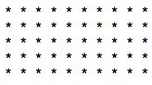 b) 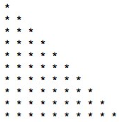 c) 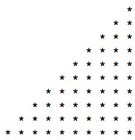 d) 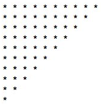 e) 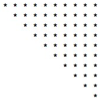
f) 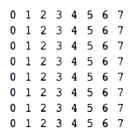 g) 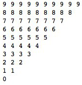 h) 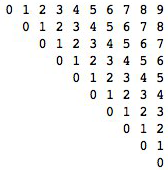 i) 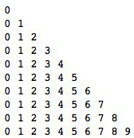 j) 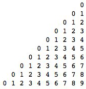
k) 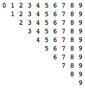 l) 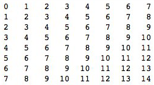 m) 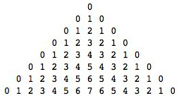 n) 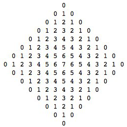
* На вход подается число, которое является стороной квадрата. По нему выдать квадрат, состоящий из спирально закрученной последовательности цифр. Пример ответа для числа 4:
1 2 3 4
12 13 14 5
11 16 15 6
10 9 8 7
Каждому символу в таблице ASCII ставится в соответствие номер. Для того, чтобы узнать номер элемента, используется функция ord(). Например, ord('a') равен 97. Наоборот, чтобы получить символ, используется chr(). То есть, chr(97) равен 'a'. Поэкспериментируйте, посмотрите, каким символам соответствуют какие номера. Выведите на экран английский алфавит.
Напишите программу, берущую на вход текст и выдающую список слов этого текста.
* Напишите строковый калькулятор (на вход принимается строка с выражением, которое надо решить). Подсказка: для работы со скобками используйте стек.